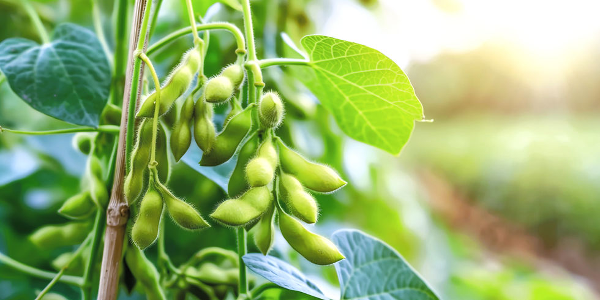

Соя — это одна из важнейших бобовых культур, широко используемая в пищевой и промышленной сферах. Она ценится за высокое содержание растительного белка и масла.
Соя применяется для производства соевого молока, масла, тофу, кормов для животных и многих других продуктов.
Поздняя весна, когда почва хорошо прогреется (обычно май).
Сентябрь – октябрь, после полного созревания бобов.
Соя содержит большое количество растительного белка, аминокислот, витаминов группы B и полезных жиров. Она широко используется как альтернатива животному белку.
США, Бразилия, Аргентина, Китай, Индия и южные регионы Европы.
Лучше всего растёт в тёплом климате с достаточным количеством влаги и длинным световым днём.